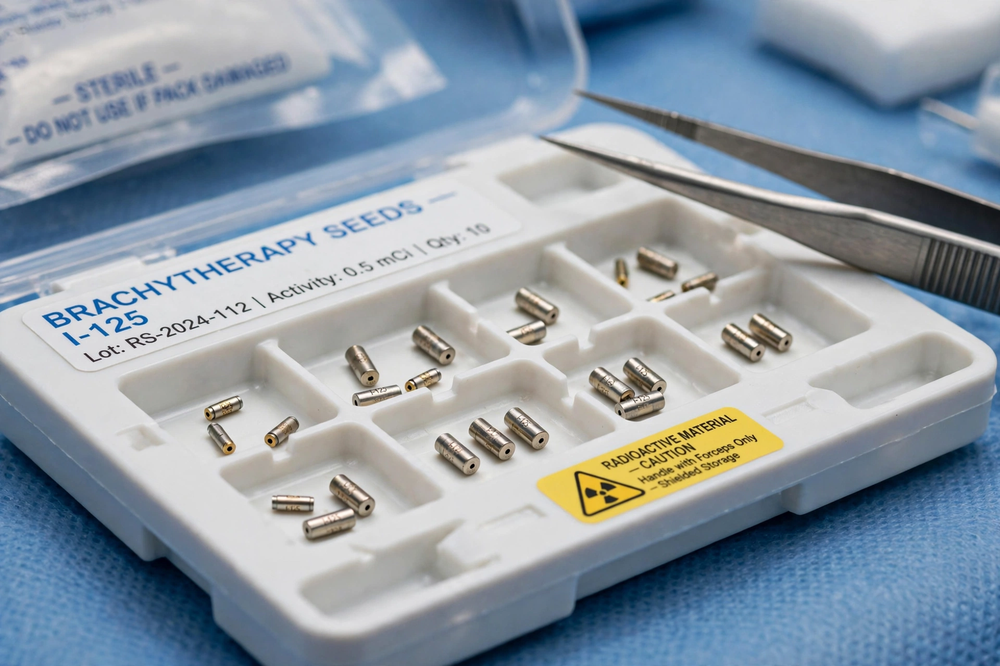

Brachytherapy
Brachytherapy is a form of radiation therapy where a sealed radiation source is placed inside or next to the area requiring treatment. The word derives from the Greek brachys, "short-distance". Brachytherapy is commonly used to treat cancers of the prostate, cervix, endometrium, breast, skin, head and neck, and other sites accessible to an applicator or implant. Because the dose falls off rapidly with distance (inverse-square law), brachytherapy delivers a highly localised dose while sparing surrounding healthy tissue.
 | |
| Other names | Internal radiotherapy, sealed source therapy |
|---|---|
| Common isotopes | Iridium-192, iodine-125, palladium-103, caesium-137 (historical: radium-226) |
| Dose rates | LDR (<2 Gy/h), MDR, HDR (>12 Gy/h), PDR |
Techniques
Brachytherapy is classified by how sources are placed (interstitial, within tissue; intracavitary, within a body cavity such as the vagina or cervix; surface moulds; intraluminal; and intravascular), by dose rate — low dose rate (LDR) delivered over days or permanently, versus high dose rate (HDR) delivered in minutes by a remote afterloader that drives a single iridium-192 source through catheters — and by duration (temporary implants versus permanent seed implants, as in low-dose-rate prostate brachytherapy with iodine-125 seeds).
Clinical uses
Gynaecological cancers: intracavitary brachytherapy is an indispensable component of curative chemoradiation for cervical cancer and of adjuvant treatment after hysterectomy for endometrial cancer. Prostate cancer: both permanent LDR seeds and HDR monotherapy or boost are standard options for localised disease. Breast: balloon and multicatheter interstitial techniques provide accelerated partial breast irradiation. Brachytherapy is also used for skin cancers, ocular melanoma (eye plaques), oesophageal and bronchial palliation, and, historically, for benign conditions such as keloids and coronary restenosis.
History
The technique began soon after the discovery of radium: in 1901 Pierre Curie suggested to Henri-Alexandre Danlos that a radioactive source could be inserted into a tumour, and radium tubes and needles became the mainstay of early radiotherapy departments. Radium's hazards and scarcity led to artificial isotopes — caesium-137 and then iridium-192 — and to afterloading techniques, in which applicators are positioned first and sources loaded remotely, protecting staff. Computerised treatment planning with CT/MRI guidance has made modern image-guided adaptive brachytherapy highly precise.
See also
Categories: Radiation therapy · Medical physics · Cancer treatments